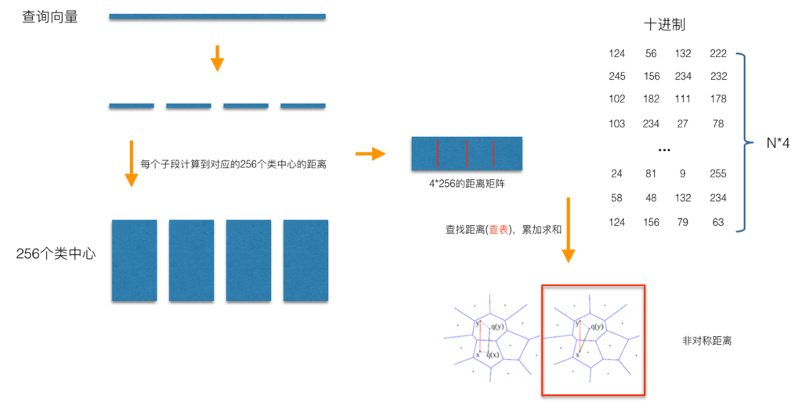

图像检索：向量索引
无论是在学界还是工业界，向量索引是一个研究得比较多的问题，学术上对应的专有名词叫Approximate Nearest Neighbor Search (ANNS)，即近似最近邻搜索。为什么是近似，而不是我们想要的精确？这就是精度与时间、算力资源的折中，采用了牺牲精度换取时间和空间的方式，从海量的样本中实时获取跟查询最相似的样本。
这里，给出向量索引的定义：向量索引是指通过某种数学量化模型，对向量构建一种时间和空间都比较高效的数据索引结构，使得我们能够实时地获取跟查询向量尽可能最相近的K个向量。从定义可以看到，要设计一种高效的向量索引模型，应该满足3个基本条件，即：
- 实时查询，支持海量（百亿、千亿级别）规模库量级的实时查询；
- 存储高效，要求构建的向量索引模型数据压缩比高，达到大幅缩减内存使占用的目的；
- 召回精度好，top@K有比较好的召回率，跟暴力搜索（brute-force search）的结果相比；
暴力搜索的召回，是ANNS召回率的上限，也就是说，不存在着一种完美的向量索引方法，使得top@1的召回率，能够达到暴力搜索的召回率。听上去让总想搞个完美算法的同学感到很失望，但我们可以不断的逼近。
向量索引发展到今天，已经在各领域得到广泛的应用，从计算机视觉，到搜索与推荐，只要物品被向量化表示了，就可能会看到向量索引的身影。本篇文章会对向量索引主流方法做一些概览性的介绍，最后结合在业务中的实践，探讨提高矢量索引召回的一些技巧，如有不当之处，欢迎拍砖与讨论。
在具体到不同类的索引方法分类前，从宏观上对向量索引有下面一个直观的认识显得很有必要：brute-force搜索的方式是在全空间进行搜索，为了加快查找的速度，几乎所有的ANNS方法都是通过对全空间分割，将其分割成很多小的子空间，在搜索的时候，通过某种方式，快速锁定在某一（几）子空间，然后在该（几个）子空间里做遍历。可以看到，正是因为缩减了遍历的空间大小范围，从而使得ANNS能够处理大规模数据的索引。
根据个人对现有的对ANNS的总结和概括，可以将向量索引方法分为四大类：基于树的方法、哈希方法、矢量量化方法、图索引量化方法。这四大类方法里面，本篇文章着重总结典型方法，其中哈希方法以LSH、矢量量化方法以PQ/OPQ/IVFOPQ、图索引量化方法以HNSW为典型代表，分别进行重点介绍。
基于树的方法
几乎所有的ANNS方法都是对全空间的划分，所以基于树的方法也不例外。基于树的方法采用树这种数据结构的方法来表达对全空间的划分，其中又以KD树最为经典，下面分别对KD树和spotify开源的Annoy进行简单介绍。
KD树
下面左图是KD树对全空间的划分过程，以及用树这种数据结构来表达的一个过程。
KD树选择从哪一维度进行开始划分的标准，采用的是求每一个维度的方差，然后选择方差最大的那个维度开始划分。这里有一个比较有意思的问题是：为何要选择方差作为维度划分选取的标准？我们都知道，方差的大小可以反映数据的波动性。方差大表示数据波动性越大，选择方差最大作为划分空间标准的好处在于，可以使得所需的划分面数目最小，反映到树数据结构上，可以使得我们构建的KD树的树深度尽可能的小。为了更进一步加深对这一点的认识，根据个人的理解，以一个简单的示例图进行说明：
假设不以方差最大的x轴为划分面(x_var = 16.25)，而是以y轴(y_var = 0.0)轴为划分面，如图中虚线所示，可以看到，该划分使得图中的四个点都落入在同一个子空间中，从而使得该划分成为一个无效的划分，体现在以树结构上，就是多了一层无用的树深度。而以x轴为初始划分则不同(图像实线所示)，以x轴为初始划分可以得到数据能够比较均匀的散布在左右两个子空间中，使得整体的查找时间能够最短。注意，在实际的kd树划分的时候，并不是图中虚线所示，而是选取中值最近的点。上面示意图构建的具体kd树如下所示：
1 | In [9]: kdtree.visualize(tree) |
一般而言，在空间维度比较低的时候，KD树是比较高效的，当空间维度较高时，可以采用下面即将介绍的哈希方法或者矢量量化方法。
kd-trees are not suitable for efficiently finding the nearest neighbour in high dimensional spaces.
In very high dimensional spaces, the curse of dimensionality causes the algorithm to need to visit many more branches than in lower dimensional spaces. In particular, when the number of points is only slightly higher than the number of dimensions, the algorithm is only slightly better than a linear search of all of the points.
Annoy
Annoy是Erik Bernhardsson写的一个以树为作为索引结构的近似最近邻搜索库，并用在Spotify的推荐系统中。Annoy的核心是不断用选取的两个质心的法平面对空间进行分割，最终将每一个划分的子空间里面的样本数据限制在K以内。对于待插入的样本xixi，从根节点依次使用法向量跟xixi做内积运算，从而判断使用法平面的哪一边（左子树or右子树）。对于查询向量qiqi，采用同样的方式（在树结构上体现为从根节点向叶子节点递归遍历），即可定位到跟qiqi在同一个子空间或者邻近的子空间的样本，这些样本即为qiqi近邻。
为了提高查询召回率，Annoy采用建立多棵子树的方式，这种方式其实有点类似AdaBoost的意思，即用多个弱分类器构成强单元分类器，NV-tree也采用了这种方式，哈希方法也同样采用了这种方式（构建多表）的方式。
值得注意的是，Annoy如果不保存原始特征，则Annoy只能返回查询的k个近邻，至于这k个里面的排序顺序是怎么样的，它是不知道的，如果需要知道，需要对这k个返回的结果，获取原始特征，再计算各自的相似度，排序一下即可得到这k个结果的排序。根据Annoy的定义的节点数据结构，如下：
1 | struct ANNOY_NODE_ATTRIBUTE Node { |
其中T v[1]保存原始特征，保存原始的特征的坏处是造成占用内存过大，索引文件过大。
哈希方法
哈希，顾名思义，就是将连续的实值散列化为0、1的离散值。在散列化的过程中，对散列化函数(也就是哈希函数)有一定的要求。根据学习的策略，可以将哈希方法分为无监督、有监督和半监督三种类型。在评估某种哈希方法的召回率的时候，可以使用暴力搜索得到的近邻作为ground truth，也可以使用样本自身的类别作为ground truth。所以在实际评估召回率的时候，根据ground truth的定义，这里面是有一点小的trick的。通常对于无监督的哈希向量量化方法，由于使用的是未标记样本，所以会很自然的采用暴力搜索得到的近邻作为ground truth。在深度学习火起来之后，特征学习与哈希向量量化通常会构成一个端到端的模型来进行学习。对于深度学习火起来之前，一些比较主流的哈希向量量化方法，可以参考这个评估基准（见hashing-baseline-for-image-retrieval），如果对其中某些方法感兴趣的，欢迎探讨，这里不再铺陈，仅聊一聊工程中在要使用到哈希方法的场景下一般都会选用的局部敏感哈希（Local Sensitive Hashing, LSH）。
Local Sensitive Hashing
关于LSH的介绍，Locality-Sensitive Hashing: a Primer这个讲解得极好，推荐一读。下面是个人结合自己的理解，提炼的一些需要重点理解的知识（附上LSH划分空间示意图，在进行理解的时候可以参照改图）。
局部敏感是啥意思？
当一个函数（或者更准确的说，哈希函数家族）具有如下属性的时候，我们说该哈希函数是局部敏感的：相近的样本点对比相远的样本点对更容易发生碰撞。
用哈希为什么可以加速查找？
对于brute force搜索，需要遍历数据集中的所有点，而使用哈希，我们首先找到查询样本落入在哪个cell(即所谓的桶)中，如果空间的划分是在我们想要的相似性度量下进行分割的，则查询样本的最近邻将极有可能落在查询样本的cell中，如此我们只需要在当前的cell中遍历比较，而不用在所有的数据集中进行遍历。
为什么要用多表哈希？
对于单表哈希，当哈希函数数目K取得太大，查询样本与其对应的最近邻落入同一个桶中的可能性会变得很微弱，针对这个问题，我们可以重复这个过程L次，从而增加最近邻的召回率。这个重复L次的过程，可以转化为构建L个哈希表，这样在给定查询样本时，我们可以找到L个哈希桶（每个表找到一个哈希桶），然后我们在这L个哈希表中进行遍历。这个过程相当于构建了K*L个哈希函数(注意是“相当”，不要做“等价”理解)。
多表哈希中哈希函数数目K和哈希表数目L如何选取？
哈希函数数目K如果设置得过小，会导致每一个哈希桶中容纳了太多的数据点，从而增加了查询响应的时间；而当K设置得过大时，会使得落入每个哈希桶中的数据点变小，而为了增加召回率，我们需要增加L以便构建更多的哈希表，但是哈希表数目的增加会导致更多的内存消耗，并且也使得我们需要计算更多的哈希函数，同样会增加查询相应时间。这听起来非常的不妙，但是在K过大或过小之间仍然可以找到一个比较合理的折中位置。通过选取合理的K和L，我们可以获得比线性扫描极大的性能提升。
Multiprobe LSH是为了解决什么问题？
多probe LSH主要是为了提高查找准确率而引入的一种策略。首先解释一下什么是Multiprobe。对于构建的L个哈希表，我们在每一个哈希表中找到查询样本落入的哈希桶，然后再在这个哈希桶中做遍历，而Multiprobe指的是我们不止在查询样本所在的哈希桶中遍历，还会找到其他的一些哈希桶，然后这些找到的T个哈希桶中进行遍历。这些其他哈希桶的选取准则是：跟查询样本所在的哈希桶邻近的哈希桶，“邻近”指的是汉明距离度量下的邻近。
通常，如果不使用Multiprobe，我们需要的哈希表数目L在100到1000之间，在处理大数据集的时候，其空间的消耗会非常的高，幸运地是，因为有了上面的Multiprobe的策略，LSH在任意一个哈希表中查找到最近邻的概率变得更高，从而使得我们能到减少哈希表的构建数目。
综上，对于LSH，涉及到的主要的参数有三个：
- K，每一个哈希表的哈希函数（空间划分）数目
- L，哈希表（每一个哈希表有K个哈希函数）的数目
- T，近邻哈希桶的数目，即the number of probes
这三个设置参数可以按照如下顺序进行：首先，根据可使用的内存大小选取L，然后在K和T之间做出折中：哈希函数数目K越大，相应地，近邻哈希桶的数目的数目T也应该设置得比较大，反之K越小，L也可以相应的减小。获取K和L最优值的方式可以按照如下方式进行：对于每个固定的K，如果在查询样本集上获得了我们想要的精度，则此时T的值即为合理的值。在对T进行调参的时候，我们不需要重新构建哈希表，甚至我们还可以采用二分搜索的方式来加快T参数的选取过程。
LSH开源实现
关于LSH开源工具库，有很多，这里推荐两个LSH开源工具包：LSHash和FALCONN, 分别对应于学习和应用场景。
LSHash
LSHash非常适合用来学习，里面实现的是最经典的LSH方法，并且还是单表哈希。哈希函数的系数采用随机的方式生成，具体代码如下：
1 | def _generate_uniform_planes(self): |
hash_size为哈希函数的数目，即前面介绍的K。整个框架，不论是LSH的哈希函数的生成方式，还是LSH做查询，都极其的中规中矩，所以用来作为了解LSH的过程，再适合不过。如果要在实用中使用LSH，可以使用FALCONN。
FALCONN
FALCONN是经过极致优化的LSH，其对应的论文为NIPS 2015 Practical and Optimal LSH for Angular Distance，Piotr Indyk系作者之一（Piotr Indyk不知道是谁？E2LSH这个页面对于看过LSH的应该非常眼熟），论文有些晦涩难懂，不过FALCONN工具包却是极其容易使用的，提供有C++使用的例子random_benchmark.cc以及Python的例子random_benchmark.py，另外文档非常的详实，具体可参阅falconn Namespace Reference和falconn module。下面将其Python例子和C++例子中初始化索引以及构建哈希表的部分提取出来，对其中的参数做一下简要的分析。
Python初始化与构建索引L127：
1 | # Hyperplane hashing |
C++初始化与构建索引L194:
1 | // Hyperplane hashing |
可以看到，有3个很重要的参数，分别是k、l和set_num_probes，对应的具体意义前面已经解释，这里不再赘述。FALCONN的索引构建过程非常快，百万量级数据，维度如果是128维，其构建索引时间大概2-3min的样子，实时搜索可以做到几毫秒响应时间。
另外谈一下数据规模问题。对于小数据集和中型规模的数据集(几个million-几十个million)， FALCONN和NMSLIB是一个非常不错的选择，如果对于大型规模数据集(几百个million以上)，基于矢量量化的Faiss是一个明智的选择。对于这方面的讨论，可以参阅讨论benchmark。
当然，FALCONN还不是很完善，比如对于数据的动态增删目前还不支持，具体的讨论可以参见Add a dynamic LSH table。其实这不是FALCONN独有的问题，NMSLIB目前也不支持。一般而言，动态的增删在实际应用场合是一个基本的要求，但是我们应注意到，增删并不是毫无限制的，在增删频繁且持续了一段时间后，这时的数据分布已经不是我们原来建索引的数据分布形式了，我们应该重新构建索引。在这一点上，基于矢量量化的方法对数据的动态增删更友好。
通常而言，哈希向量量化方法比矢量量化方法，在召回率上要差一些。一个比较直观的理解是：哈希向量量化后在计算距离的时候，计算的是汉明距离，在向量量化比特位长度相同的条件下，汉明距离表示的距离集合是有限的，而矢量量化计算的距离是一个实数，意味着它构成的距离集合是无限的。
所以，实际工业采用的向量索引方法，主要还是矢量量化方法居多，主要原因有二：
- 矢量量化方法能够较好的兼顾检索召回率以及量化压缩比；
- 增删友好的优点使得构建的服务更稳定；
下面对矢量量化方法以及对应的两种实际应用采用得较多的多阶段矢量量化方法、乘积量化方法做简单的介绍。
矢量量化方法
矢量量化方法，即Vector Quantization，其具体定义为：将一个向量空间中的点用其中的一个有限子集来进行编码的过程。在矢量量化编码中，关键是码本的建立和码字搜索算法，如果想对矢量量化有个整体的概览，强烈推荐《Handbook of Image and Video Processing》一书中[Fundamentals of Vector Quantization](https://e-class.teilar.gr/modules/document/file.php/CS108/7.4. Vector Quantization.pdf)章节。下面对矢量量化中两类典型的方法多阶段矢量量化、乘积量化以及乘积量化的改进做简单介绍。
多阶段矢量量化
多阶段矢量量化（Multi-Stage Vector Quantization，MSVQ）也称为残差矢量量化（Residual Vector Quantization, RVQ），它是一种思想，即将编码任务分解为一系列级联过程。级联过程可以用下图直观的展示出来：
如上图所示，对于待量化的向量x，经过一级量化器quantizer1后，得到的量化残差为r1 = x - C1b1，其中C1为一级量化器的码本，b1为x经过一级量化器quantizer1后的表示结果，将一级量化误差r1作为二级量化器的输入，后面过程与此类似。通过这种级联量化的量化方式，当构建的量化器为无穷个时，x可以被这无穷个码本精确表示。上图右侧子图比较直观的描绘了x被多个码本逐步近似的过程。
上述 C1、C2、…、Ci、… 这些码本在构建的时候，可以采用KMeans等方式得到各个量化器的码本。以上面构建的4个级联的码本为例，当得到码本C1、C2、C3、C4后，x量化的结果即可用[b1, b2, b3, b4]表示。对于xq查询向量与x距离的计算，在计算xq与 C1、C2、…、Ci、… 之间的内积距离表后，可以通过查表的方式，获取到非对称距离。
这种多阶段级联的矢量量化方式，相比单阶段一次性量化，极大的降低了码本在训练过程中消耗的计算资源。举个例子，4个阶段的MSVQ，每阶段用KMeans只需构建构建256大小的码本，则对空间分割构建的cell数目为256256256256，效率是很高的，但是如果采用单阶段一次性量化构建4294967296大小的码本，这个码本根本没法用KMeans聚出来。此外在计算距离的时候，采用4阶段的MSVQ方式，只需计算4256次距离的计算构成距离表，然后采用查表方式计算距离，而单阶段一次性量化需要计算4294967296次的距离计算。MSVQ的进一步加速版本是倒排MSVQ，将一级码本视为倒排链，从而构建倒排结构，构建MSVQ倒排结构。
我们可以将MSVQ类比成“深度加深”的过程，下面介绍的非常经典的乘积量化方法，可以为“宽度加宽”的过程。
乘积量化
乘积量化(Product Quantization，PQ)是Herve Jegou在2011年提出的一种非常经典实用的矢量量化索引方法，在工业界向量索引中已得到广泛的引用，并作为主要的向量索引方法，在Fasis有非常高效的实现。乘积量化的核心思想是分段（划分子空间）和聚类，或者说具体应用到ANN近似最近邻搜索上，KMeans是PQ乘积量化子空间数目为1的特例。PQ乘积量化生成码本和量化的过程可以用如下图示来说明：

在训练阶段，针对N个训练样本，假设样本维度为128维，我们将其切分为4个子空间，则每一个子空间的维度为32维，然后我们在每一个子空间中，对子向量采用K-Means对其进行聚类(图中示意聚成256类)，这样每一个子空间都能得到一个码本。这样训练样本的每个子段，都可以用子空间的聚类中心来近似，对应的编码即为类中心的ID。如图所示，通过这样一种编码方式，训练样本仅使用的很短的一个编码得以表示，从而达到量化的目的。对于待编码的样本，将它进行相同的切分，然后在各个子空间里逐一找到距离它们最近的类中心，然后用类中心的id来表示它们，即完成了待编码样本的编码。
正如前面所说的，在矢量量化编码中，关键是码本的建立和码字的搜索算法，在上面，我们得到了建立的码本以及量化编码的方式。剩下的重点就是查询样本与dataset中的样本距离如何计算的问题了。
在查询阶段，PQ同样在计算查询样本与dataset中各个样本的距离，只不过这种距离的计算转化为间接近似的方法而获得。PQ乘积量化方法在计算距离的时候，有两种距离计算方式，一种是对称距离，另外一种是非对称距离。非对称距离的损失小(也就是更接近真实距离)，实际中也经常采用这种距离计算方式。下面过程示意的是查询样本来到时，以非对称距离的方式(红框标识出来的部分)计算到dataset样本间的计算示意：

具体地，查询向量来到时，按训练样本生成码本的过程，将其同样分成相同的子段，然后在每个子空间中，计算子段到该子空间中所有聚类中心得距离，如图中所示，可以得到4*256个距离，这里为便于后面的理解说明，可以把这些算好的距离称作距离表。在计算库中某个样本到查询向量的距离时，比如编码为(124, 56, 132, 222)这个样本到查询向量的距离时，我们分别到距离表中取各个子段对应的距离即可，比如编码为124这个子段，在第1个算出的256个距离里面把编号为124的那个距离取出来就可，所有子段对应的距离取出来后，将这些子段的距离求和相加，即得到该样本到查询样本间的非对称距离。所有距离算好后，排序后即得到我们最终想要的结果。
从上面这个过程可以很清楚地看出PQ乘积量化能够加速索引的原理：即将全样本的距离计算，转化为到子空间类中心的距离计算。比如上面所举的例子，原本brute-force search的方式计算距离的次数随样本数目N成线性增长，但是经过PQ编码后，对于耗时的距离计算，只要计算4*256次，几乎可以忽略此时间的消耗。另外，从上图也可以看出，对特征进行编码后，可以用一个相对比较短的编码来表示样本，自然对于内存的消耗要大大小于brute-force search的方式。
在某些特殊的场合，我们总是希望获得精确的距离，而不是近似的距离，并且我们总是喜欢获取向量间的余弦相似度（余弦相似度距离范围在[-1,1]之间，便于设置固定的阈值），针对这种场景，可以针对PQ乘积量化得到的前top@K做一个brute-force search的排序。
倒排乘积量化
倒排PQ乘积量化(IVFPQ)是PQ乘积量化的更进一步加速版。其加速的本质逃不开在最前面强调的是加速原理：brute-force搜索的方式是在全空间进行搜索，为了加快查找的速度，几乎所有的ANN方法都是通过对全空间分割，将其分割成很多小的子空间，在搜索的时候，通过某种方式，快速锁定在某一（几）子空间，然后在该（几个）子空间里做遍历。在上一小节可以看出，PQ乘积量化计算距离的时候，距离虽然已经预先算好了，但是对于每个样本到查询样本的距离，还是得老老实实挨个去求和相加计算距离。但是，实际上我们感兴趣的是那些跟查询样本相近的样本（姑且称这样的区域为感兴趣区域），也就是说老老实实挨个相加其实做了很多的无用功，如果能够通过某种手段快速将全局遍历锁定为感兴趣区域，则可以舍去不必要的全局计算以及排序。倒排PQ乘积量化的”倒排“，正是这样一种思想的体现，在具体实施手段上，采用的是通过聚类的方式实现感兴趣区域的快速定位，在倒排PQ乘积量化中，聚类可以说应用得淋漓尽致。
倒排PQ乘积量化整个过程如下图所示：

在PQ乘积量化之前，增加了一个粗量化过程。具体地，先对N个训练样本采用KMeans进行聚类，这里聚类的数目一般设置得不应过大，一般设置为1024差不多，这种可以以比较快的速度完成聚类过程。得到了聚类中心后，针对每一个样本x_i，找到其距离最近的类中心c_i后，两者相减得到样本x_i的残差向量(x_i-c_i)，后面剩下的过程，就是针对(x_i-c_i)的PQ乘积量化过程，此过程不再赘述。
在查询的时候，通过相同的粗量化，可以快速定位到查询向量属于哪个c_i（即在哪一个感兴趣区域），然后在该感兴趣区域按上面所述的PQ乘积量化距离计算方式计算距离。
最优乘积量化
最优乘积量化（Optimal Product Quantization, OPQ）是PQ的一种改进版本。其改进体现在，致力于在子空间分割时，对各子空间的方差进行均衡。在具体实现的时候，我们可以将Optimal的过程实现为一个组件。
通常，用于检索的原始特征维度较高，所以实际在使用PQ等方法构建索引的时候，常会对高维的特征使用PCA等降维方法对特征先做降维处理，这样降维预处理，可以达到两个目的：一是降低特征维度；二是在对向量进行子段切分的时候要求特征各个维度是不相关的，做完PCA之后，可以一定程度缓解这个问题。但是这么做了后，在切分子段的时候，采用顺序切分子段仍然存在一定的问题，这个问题可以借用ITQ中的一个二维平面的例子加以说明：
如上面a图所示，对于PCA降维后的二维空间，假设在做PQ的时候，将子段数目设置为2段，即切分成x和y两个子向量，然后分别在x和y上做聚类（假设聚类中心设置为2）。对a图和c图聚类的结果进行比较，可以明显的发现，a图在y方向上聚类的效果明显差于c图，而PQ又是采用聚类中心来近似原始向量（这里指降维后的向量），也就是c图是我们需要的结果。这个问题可以转化为数据方差来描述：在做PQ编码时，对于切分的各个子空间，我们应尽可能使得各个子空间的方差比较接近，最理想的情况是各个子空间的方差都相等。上图a图中，x和y各个方向的方差明显是差得比较大的，而对于c图，x和y方向各个方向的方差差不多是比较接近的。
为了在切分子段的时候，使得各个子空间的方差尽可能的一致，Herve Jegou在Aggregating local descriptors into a compact image representation中提出使用一个正交矩阵来对PCA降维后的数据再做一次变换，使得各个子空间的方差尽可能的一致。其对应的待优化目标函数见论文的第5页，由于优化该目标函数极其困难，Herve Jegou使用了Householder矩阵来得到该正交矩阵，但是得到的该正交矩阵并不能很好的均衡子空间的方差。
OPQ致力于解决的问题正是对各个子空间方差的均衡。具体到方法上，OPQ借鉴了ITQ的思想，在聚类的时候对聚类中心寻找对应的最优旋转矩阵，使得所有子空间中各个数据点到对应子空间的类中心的L2损失的求和最小。OPQ在具体求解的时候，分为非参求解方法和带参求解方法，具体为：
- 非参求解方法。跟ITQ的求解过程一样。
- 带参求解方法。带参求解方法假设数据服从高斯分布，在此条件下，最终可以将求解过程简化为数据经过PCA分解后，特征值如何分组的问题。在实际中，该解法更具备高实用性。
从上面可以看到，倒排乘积量化IVFPQ可以视为1阶段的MSVQ和PQ的结合版本，而OPQ是PQ对子空间方差均衡的改进。基于这样一种普适性的视角，可以构建一种矢量量化框架，MSVQ、PQ、OPQ中的O，都是该矢量量化框架中的基础组件，通过这些组件的组合，我们可以敏捷的得到上面介绍方法的各种实现。
基于图索引量化方法
图索引量化是一种将图引入向量索引的方法，由于图索引的高召回特点，近几年基于图索引量化方法出现了不少这方面的工作，比如早期的KNNGraph和最近的将基于图索引量化方法推向成熟应用的HNSW方法。
首先从检索的召回率上来评估，基于图的索引方法要优于目前其他一些主流ANN搜索方法，比如乘积量化方法（PQ、OPQ）、哈希方法等。虽然乘积量化方法的召回率不如HNSW，但由于乘积量化方法具备内存耗用更小、数据动态增删更灵活等特性，使得在工业检索系统中，在对召回率要求不是特别高的场景下，乘积量化方法在工业界，仍然是使用得较多的一种索引方法。下面是乘积量化和图索引方法特性做的一个对比，以HNSW和OPQ为典型代表：
| 特性 | OPQ | HNSW |
|---|---|---|
| 内存占用 | 小 | 大 |
| 召回率 | 较高 | 高 |
| 数据动态增删 | 灵活 | 不易 |
基于图索引的ANN方法由于数据在插入索引的时候，需要计算（部分）数据间的近邻关系，因而需要实时获取到到数据的原始特征，几乎所有基于图ANN的方法在处理该问题的时候，都是直接将原始特征加载在内存（索引）里，从而造成对内存使用过大，至于召回率图ANN方法要比基于量化的方法要高，这个理解起来比较直观。下面基于图ANN方法HNSW做原理上的简要介绍。
HNSW
Hierarchical Navigable Small World Graphs (HNSW) 是Yury A. Malkov提出的一种基于图索引的方法，它是Yury A. Malkov在他本人之前工作NSW上一种改进，通过采用层状结构，将边按特征半径进行分层，使每个顶点在所有层中平均度数变为常数，从而将NSW的计算复杂度由多重对数(Polylogarithmic)复杂度降到了对数(logarithmic)复杂度。HNSW的主要贡献如下：
- 图输入节点明确的选择
- 使用不同尺度划分链接
- 使用启发式方式来选择最近邻
近邻图技术
对于给定的近邻图，在开始搜索的时候，从若干输入点（随机选取或分割算法）开始迭代遍历整个近邻图。
在每一次横向迭代的时候，算法会检查链接或当前base节点之间的距离，然后选择下一个base节点作为相邻节点，使得能最好的最小化连接间的距离。
近邻图主要的缺陷：1. 在路由阶段，如果随机从一个或者固定的阶段开始，迭代的步数会随着库的大小增长呈现幂次增加；2. 当使用k-NN图的时候，一个全局连接可能的损失会导致很差的搜索结果。
算法描述
网络图以连续插入的方式构建。对于每一个要插入的元素，采用指数衰变概率分布函数来随机选取整数最大层。
- 图构建元素插入过程（Algorithm 1）：从顶层开始贪心遍历graph，以便在某层A中找到最近邻。当在A层找到局部最小值之后，再将A层中找到的最近邻作为输入点（entry point），继续在下一层中寻找最近邻，重复该过程；
- 层内最近邻查找（Algorithm 2）：贪心搜索的改进版本；
- 在搜索阶段，维护一个动态列表，用于保持ef个找到的最近邻元素
在搜索的初步阶段，ef参数设置为1。搜索过程包括zoom out和zoom in两个阶段，zoom out是远程路由，zoom in顾名思义就是在定位的区域做精细的搜索过程。整个过程可以类比在地图上寻找某个位置的过程：我们可以地球当做最顶层，五大洲作为第二层，国家作为第三层，省份作为第四层……，现在如果要找海淀五道口，我们可以通过顶层以逐步递减的特性半径对其进行路由（第一层地球->第二层亚洲—>第三层中国->第四层北京->海淀区），到了第0层后，再在局部区域做更精细的搜索。
数据实验说明
199485332条人脸数据（128维，L2归一化）作为database, 10000条人脸数据作为查询。gound truth由暴力搜索结果产生（余弦相似度），将暴力搜索结果的rank@1作为gound truth，评估top@K下的召回率。
实验结果与调优
M参数：80，内存大小: 159364 Mb，索引文件：cnn2b_199485332m_ef_80_M_32_ip.bin，查询样本数目: 10000，ef: 1000，距离：内积距离
| top@K | 召回 | 时间(time(us) per query) |
|---|---|---|
| 1 | 0.957000 | - |
| 2 | 0.977300 | 9754.885742us |
| 3 | 0.981200 | 9619.380859us |
| 4 | 0.983100 | 9652.819336us |
| 5 | 0.983800 | 9628.488281us |
| 10 | 0.984500 | 9650.678711us |
| 50 | 0.986400 | 9647.286133us |
| 100 | 0.986700 | 9665.638672us |
| 300 | 0.987000 | 9685.414062us |
| 500 | 0.987100 | 9744.437500us |
| 1000 | 0.987100 | 9804.702148us |
M参数：16，Mem: 173442 Mb， 索引文件：cnn2b_199485332m_ef_40_M_16.bin, 查询样本数目: 10000，ef: 1000，距离：欧氏距离
| top@K | 召回 | 时间(time_us_per_query) |
|---|---|---|
| 1 | 0.887800 | 4845.700684us |
| 2 | 0.911700 | 6732.230957us |
| 3 | 0.916600 | 6879.585449us |
| 4 | 0.917500 | 6963.914062us |
| 5 | 0.918000 | 6920.318359us |
| 10 | 0.920200 | 6880.795898us |
| 50 | 0.922400 | 6900.778809us |
| 100 | 0.923000 | 6970.664062us |
| 300 | 0.923400 | 6978.517578us |
| 500 | 0.923400 | 6992.306152us |
M参数：40，Mem: 211533 Mb， 索引文件：cnn2b_199485332m_ef_40_M_40.bin, 查询样本数目: 10000，ef: 1000，距离：内积距离
| top@K | 召回 | 时间(time_us_per_query) |
|---|---|---|
| 1 | 0.928600 | 6448.714355us |
| 2 | 0.948300 | 7658.459961us |
| 3 | 0.952600 | 7674.244629us |
| 4 | 0.954000 | 7659.506348us |
| 5 | 0.954700 | 7679.874023us |
| 10 | 0.955800 | 7709.812500us |
| 50 | 0.957400 | 7720.283691us |
| 100 | 0.957800 | 7722.512695us |
| 300 | 0.958000 | 7763.615234us |
| 500 | 0.958100 | 7779.351562us |
| 1000 | 0.958100 | 7859.372559us |
余弦相似度与余弦距离关系
Supported distances:
| Distance | parameter | Equation |
|---|---|---|
| Squared L2 | ‘l2’ | d = sum((Ai-Bi)^2) |
| Inner product | ‘ip’ | d = 1.0 - sum(Ai*Bi)) |
| Cosine similarity | ‘cosine’ | d = 1.0 - sum(AiBi) / sqrt(sum(AiAi) * sum(Bi*Bi)) |
参数说明
- efConstruction：设置得越大，构建图的质量越高，搜索的精度越高，但同时索引的时间变长，推荐范围100-2000
- efSearch：设置得越大，召回率越高，但同时查询的响应时间变长，推荐范围100-2000，在HNSW，参数ef是efSearch的缩写
- M：在一定访问内，设置得越大，召回率增加，查询响应时间变短，但同时M增大会导致索引时间增加，推荐范围5-100
HNSW L2space返回的top@K，是距离最小的K个结果，但是在结果表示的时候，距离是从大到小排序的，所以top@K距离是最小的，top@K-1距离是次之，top@1是距离第K大的。只是结果在表示上逆序了而已，不影响最终的结果。如果要按正常的从小到大来排序，则对top@K的结果做个逆序即可。作者在python的接口里，实现了这种逆序，具体见bindings.cpp#L287，所以python的结果和c++的结果，是逆序的差异。
参数详细意义
- M：参数M定义了第0层以及其他层近邻数目，不过实际在处理的时候，第0层设置的近邻数目是2*M。如果要更改第0层以及其他层层近邻数目，在HNSW的源码中进行更改即可。另外需要注意的是，第0层包含了所有的数据点，其他层数据数目由参数mult定义，详细的细节可以参考HNSW论文。
- delaunay_type：检索速度和索引速度可以通过该参数来均衡heuristic。HNSW默认delaunay_type为1，将delaunay_type设置为1可以提高更高的召回率(> 80%)，但同时会使得索引时间变长。因此，对于召回率要求不高的场景，推荐将delaunay_type设置为0。
- post：post定义了在构建图的时候，对数据所做预处理的数量（以及类型），默认参数设置为0，表示不对数据做预处理，该参数可以设置为1和2（2表示会做更多的后处理）。
更详细的参数说明，可以参考parameters说明。
HNSW Demo
小白菜基于局部特征，采用HNSW做过一版实例搜索，详细说明详见HNSW SIFTs Retrieval。适用范围：中小规模。理论上，直接基于局部特征索引的方法，做到上千万级别的量级，是没有问题的，成功的例子详见videntifier，Herwig Lejsek在设计videntifier系统的时候，使用的是NV-Tree，每一个高维向量只需用6个字节来表示，压缩比是非常大的，(O)PQ折中情况下一般都需要16个字节。关于NV-Tree的详细算法，可以阅读Herwig Lejsek的博士论文NV-tree: A Scalable Disk-Based High-Dimensional Index，墙裂推荐一读。
总结
本文主要结合个人理解与应用实践，介绍了向量索引技术四大类方法，即基于树的方法、哈希方法、矢量量化方法、图索引量化方法，并着重介绍了工业界应用较多且非常典型的方法，即哈希方法中的典型代表LSH、多表LSH以及矢量量化索引中的MSVQ、PQ、OPQ、HNSW。如果其中理解如有不到位或者有误的地方，欢迎指正或探讨。
If you like this blog or find it useful for you, you are welcome to comment on it. You are also welcome to share this blog, so that more people can participate in it!